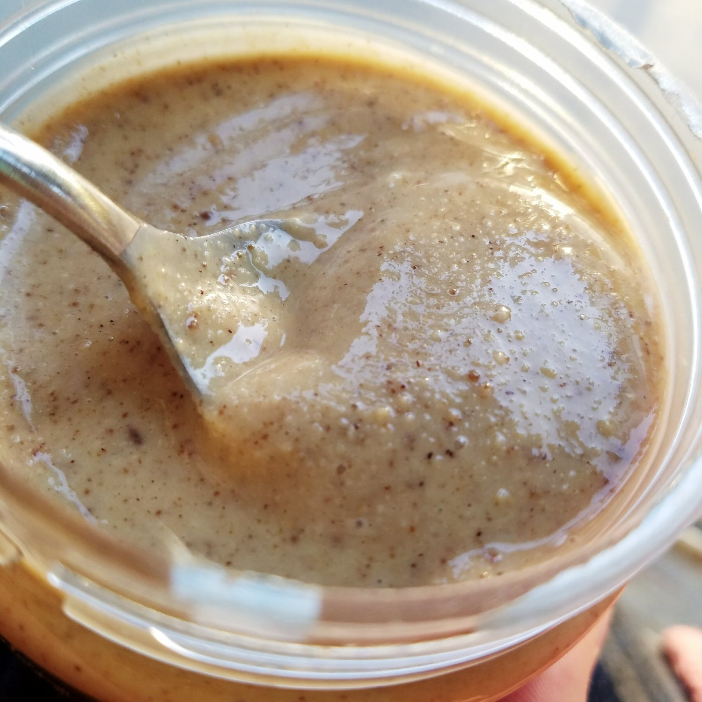
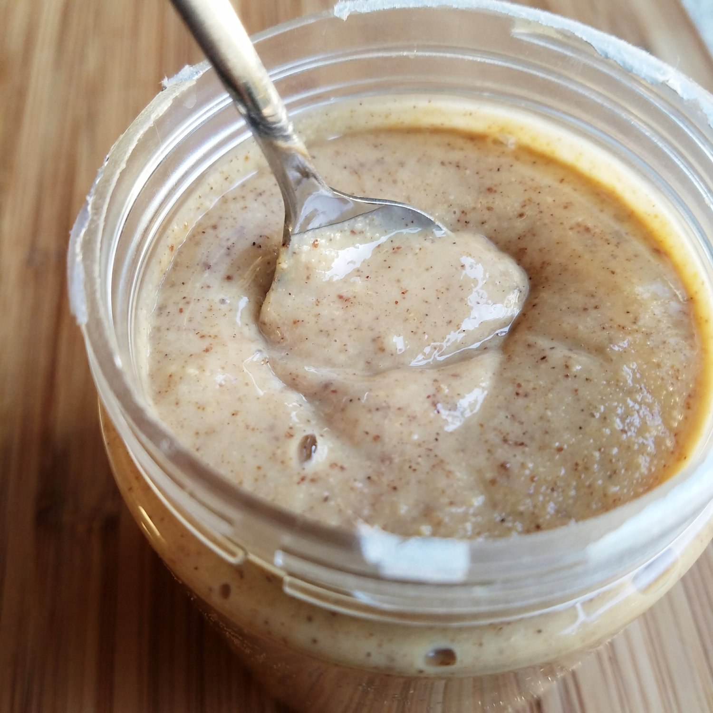
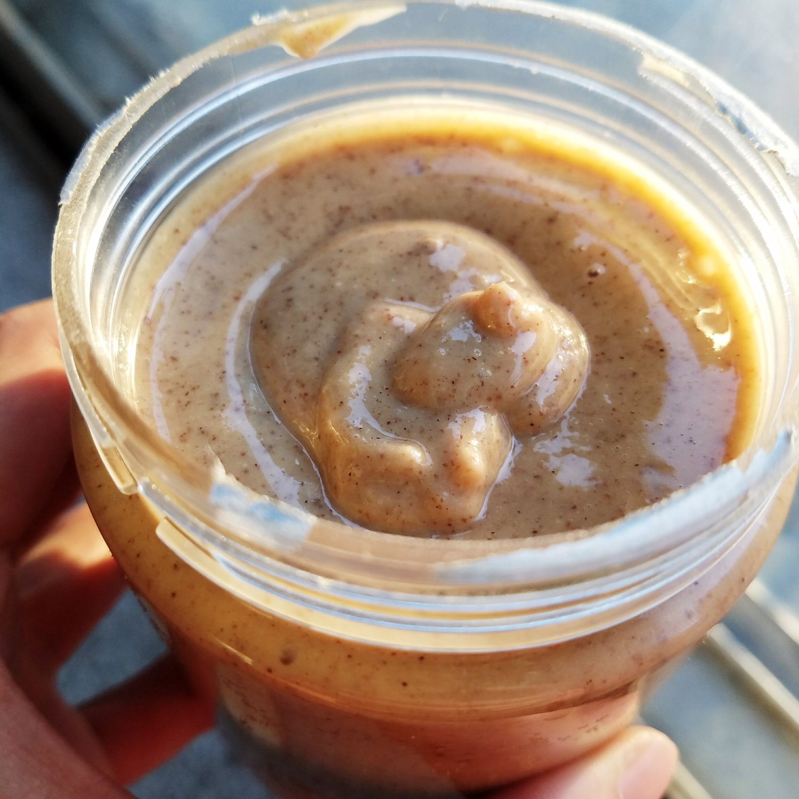

Salted Cashew Peanut Butter with Cinnamon (vegan, gluten free)



Creamy, salted cashew peanut butter spiced with a touch of cinnamon and a light roast. This sweet and salty combo is a simple to make variation of peanut butter that adds a whirlwind of flavor. Great on bananas, oatmeal, or toast, this simple peanut butter makeover is all natural, vegan, gluten free, and refined sugar free!
Can we just take a second to appreciate the beauty of this nut butter? I feel like a proud mother that just brought something precious into the world. This texture is so creamy, but not too runny or drippy (which would just be a disaster). It's in the middle at perfection. Not only is the texture perfect, but the taste is just so well-rounded, yet simple at the same time. The nuts I used are roasted and salted already, so half the work was done there. But then I add a touch of coconut sugar for sweetness and some cinnamon for a nice, subtle aftertaste to leave your palette feeling comforted.
This is my first time making a nut butter the proper way. And I have to say...I can't imagine buying a nut butter ever again. Once I go through my current stash, since I've vowed to not buy more, I'm just going to make them! There's so many flavor options whirling around in my head now. I overcomplicated things in my head, but after actually making it, this is way too simple. All you need is a food processor and you're golden. The first time I tried making it and failed was years ago literally before I had my blog. And the nuts I used? WALNUTS. Worst. Decision. Ever. I think that's where the failure began hahah. But this was just.. so perfect.
So what compelled me to make this if I still own so many nut butters? My coworkers had SO many extra nuts that my old boss has been bringing in. They've been eating them slowly, but I just decided to ask like heyyy... since you eat peanut butter anyways, want me to make some for you? I think they usually go with Jif and processed stuff, so I thought it'd be fun to bring in a natural, healthy jar of nut butter. And they loved it!!!I have to warn you... although the process is easy and takes less than 5 minutes, it can be a little intimidating the first time you use a food processor for grinding nuts. At first, it's going to be loudddd while it chops the whole nuts. Then a crumbly texture will form. Then the crumbles will start to ball up into a couple small balls or even one big huge one. After the "ball stage" the oils will start to release and it'll become more smooth and creamy like you're expecting. At this point, before fully blended, is when you want to scrape down the sides a bit so you don't miss anything! Lastly, blend again and a luscious, creamy nut butter will result. It's really such a magical process. And this is why I feel like I've given birth.
There's really no limit to what you can put this salted cashew peanut butter on. Bananas, oatmeal, toast, yogurt, ice cream, pancakes, celery, you name it!! This recipe is sweet and salty and a much healthier alternative to store-bought peanut butter filled with processed sugars and oils. It is all natural, vegan, gluten free, and refined sugar free!
Salted Cashew Peanut Butter with Cinnamon
Makes: approx. 10 servings of nut butter, 2 tbsp. a serving (~1.25 cups)
-
1 cup lightly salted roasted peanuts
-
1 cup lightly salted roasted cashews
-
2 TBSP liquid coconut oil
-
1 TBSP coconut sugar
-
1/2 tsp cinnamon
In a food processor, add the peanuts, cashews, and liquid coconut oil (this coconut oil is liquid at all temperatures, always. You could also use solidified coconut oil, melted). Blend, starting at a low speed. Let it all blend for 2-3 minutes. The nuts will become gritty, and then eventually the oils will release and it will become creamy. Open the processor and scrape down the sides to add back any "fly away" pieces. Add the coconut sugar and cinnamon, then blend again. Switch from low to high speed, and finish blending for a minute. That's it!